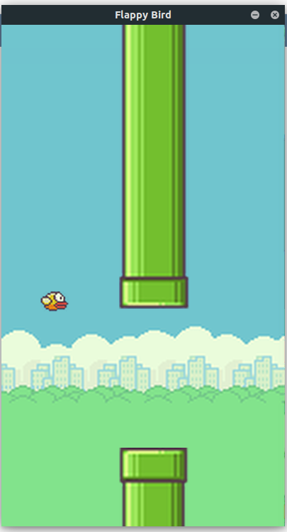

Juego a desarrollar

Flappy Bird es un videojuego sencillo y adictivo en el que los jugadores controlan un pájaro que vuela a través de una serie de obstáculos. El juego fue desarrollado por Dong Nguyen y ganó popularidad por su jugabilidad desafiante y minimalista. A continuación, se explica cómo funciona:
Objetivo del juego
El objetivo principal es guiar al pájaro a través de los huecos entre los obstáculos (que suelen ser tuberías verdes, similares a las de Super Mario), evitando que choque con ellos o que caiga al suelo. El jugador gana un punto por cada conjunto de obstáculos superado.
Mecánica del juego
- Control del pájaro:
- El jugador controla al pájaro tocando la pantalla (en dispositivos móviles) o haciendo clic en un botón (en otros dispositivos).
- Cada toque o clic hace que el pájaro "salte" hacia arriba brevemente.
- Si el jugador no toca la pantalla, el pájaro desciende debido a la gravedad simulada.
- Movimiento y físicas:
- El pájaro tiene un movimiento constante hacia la derecha.
- La gravedad tira continuamente del pájaro hacia abajo, y el jugador debe mantenerlo en vuelo ajustando los toques.
- Obstáculos:
- Las tuberías aparecen desde la derecha de la pantalla, con huecos verticales de tamaño fijo pero con posiciones que varían aleatoriamente.
- Las tuberías se mueven hacia la izquierda, simulando el avance del pájaro.
- Pérdida del juego:
- El jugador pierde si el pájaro toca una tubería.
- Cae al suelo.
- Sale por la parte superior de la pantalla.